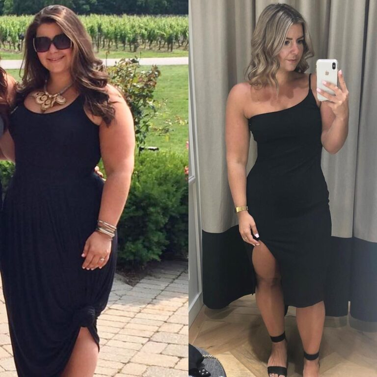
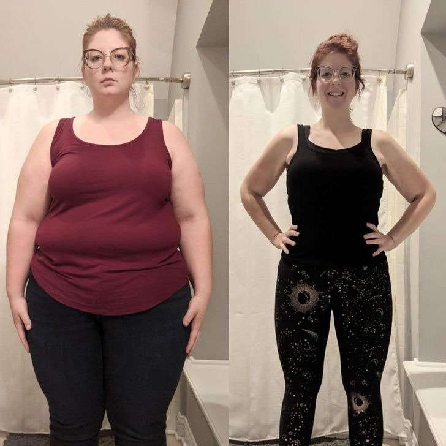
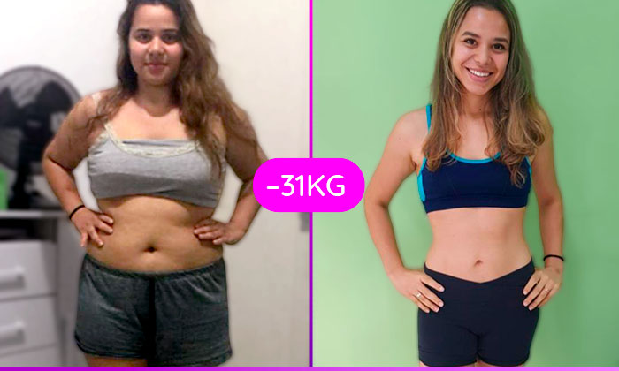

Desenvolvido no melhor centro de pesquisa do mundo, tem feito um enorme sucesso nos Estados Unidos e acaba de chegar ao Brasil com resultados surpreendentes, "Lift Detox" foi liberado pela Anvisa e esta sendo comercializado a partir de Setembro em todo o país. A advogada Camila Ferreira fez o uso e comprovou 100% a sua eficácia.
Por G1 RioSe você está acima do peso, então você sabe exatamente o que é estar insatisfeito com o que vê no espelho, as roupas não servirem mais e problemas de saúde, cansaço e baixa autoestima… São apenas algumas situações que ocorrem com quem está acima do peso, muitos homens e mulheres passam por essas situações diariamente.
Camila Ferreira, advogada de 34 anos, chegou a pesar 105 kg, mas nunca se preocupou-se com a balança. Ela só viu que era preciso emagrecer quando sua obesidade começou a atrapalhar o seu casamento.
“Meus problemas com a balança começaram quando fui morar no exterior, aos 17 anos".
Ganhei muitos quilos, desde então, fiquei no famoso efeito sanfona. Mas nunca tive problemas por ser gordinha, pelo menos até então.
De volta ao Brasil, me casei e tive um filho, engordei ainda mais e não consegui voltar ao peso de antes, meu marido ficou incomodado, me pedia para tentar emagrecer de uma forma até educada.
O tempo foi passando e engordei ainda mais, bom, ele começou a perder a paciência, vi nossa relação esfriar e eu precisava dar um basta nisso.
Quando a gente quer emagrecer, nós olhamos em todos os lugares, e fazemos muitas dietas encontradas na internet, porém em 99% dos casos é perda de tempo e dinheiro.
O que eu fiz para emagrecer 32 kg em apenas 6 meses foi seguir uma dica de uma amiga que conheci nos EUA.
Ela disse que lá nos EUA tem um suplemento em cápsula que está revolucionando o emagrecimento de forma segura e saudável, com resultados já nos primeiros dias de uso e sem aquele efeito sanfona indesejado.
Então comecei a pesquisar e fiquei esperançosa quando vi que, após longos testes de eficácia, a ANVISA havia aprovado aqui no Brasil e que já tinha muita gente usando.
Vi nas redes sociais resultados extraordinários de pessoas que eliminaram 4kg, 8kg, 11kg, 15kg…
Entrei direto no site oficial do Lift Detox, escolhi um kit com 3 potes para experimentar e já na segunda semana eu perdi 4kg de pura gordura, fiquei muito feliz e comprei o kit de 5 potes do Lift Detox.
Quando havia chegado no 3º pote, eu estava 18kg mais magra...Já estava vestindo tamanho 42.
Ah!E quando a gente compra qualquer kit, nós recebemos totalmente grátis e-books com guias de emagrecimento detox e fit, então, comecei esses planos alimentares que potenciaram ainda mais meu processo de emagrecimento.
Seguindo direitinho, tomando 2 cápsulas ao dia 30 minutos antes do almoço e jantar, conciliando uma alimentação um pouco mais controlada cheguei ao término do tratamento.
O meu marido ficou surpreso com o resultado que obtive em tão pouco tempo. Perdia 2 kg de pura gordura por semana, consegui controlar minha vontade por doces, tive mais energia para fazer exercícios e manter uma vida saudável.
Hoje estou vestindo roupas de numeração 38, estou muito feliz. Poder ir comprar uma roupa na loja e pedir 38 é uma satisfação enorme que só nós mulheres conseguimos entender. Meu casamento está de volta aos trilhos, meu marido muito feliz e sempre me elogiando.
Minhas pernas diminuíram significativamente as celulites, estão mais lisinhas minha pele melhorou, aquela gordura no meio das coxas sumiu, o braço está mais durinho.
Enfim, no começo fiquei desconfiada e pensei que seria mais um produto que esse povo cria só para ganhar dinheiro, mas depois de experimentar o Lift Detox, pude ver que se trata de um emagrecedor que funciona de fato.
Ela não foi a única brasileira convidada para fazer testes com o produto antes do início das vendas no Brasil. No Site Oficial, da marca existem depoimentos de pelo menos mais 5 mulheres, de 21 até 68 anos, que relataram suas experiências positivas com o produto.
Spirulina:Fonte de energia, vitamina e minerais a spirulina auxilia no fortalecimento do sistema imunológico, controla a pressão e o colesterol e melhora a performance muscular.;
Cromo: Age diretamente como um poderoso inibidor de apetite, trazendo saciedade e rápidos resultados na balança.;
Quitosana: Remédio Natural responsável por eliminar a gordura do corpo e regular o trânsito intestinal.
Psyllium: Rico em fibra o psyllium auxilia na perda de peso, no controle do colesterol e na redução da pressão arterial.;
Guaraná: Rico em energia e extraído diretamente da Amazônia ele auxilia o organismo a expulsar a gordura e age como um combustível para o corpo, fornecendo muito mais energia e disposição para o dia-a-dia.;
Vitamina E: Acelera o metabolismo estimulando a quebra da gordura corporal, a Cafeína apresenta excelentes resultados para o emagrecimento e trabalha diretamente no aumento da energia e disposição, visto que possui propriedades termogênicas para o nosso corpo;
Lift Detox, é um composto completo, que trabalha no processo de inibição de apetite, aceleração do metabolismo favorecendo a queima calórica e desintoxicação do organismo.
Quando as fibras entram em contato com a água cria-se uma espécie de gel estomacal, que reduz o espaço no estômago que seria para a comida, gerando assim saciedade rapidamente e inibindo o apetite.

Após 1 mês de uso de Lift Detox, já é possível ver melhora significativa no corpo.
ELIMINAR 15KG JÁ NOS PRIMEIROS 2 MESES
ACELERAR METABOLISMO (LIPÓLISE)
INIBIR O APETITE
REGULAR O INTESTINO
REDUZIR OS NÍVEIS DE COLESTEROL
REDUÇÃO CONSIDERÁVEL DAS CELULITES
REDUÇÃO INCHAÇO DO CORPO
DESINTOXICAR O ORGANISMO
Lift Detox é um produto seguro e saudável e sem qualquer efeito colateral, tem ajudado mulheres a eliminar as temíveis celulites, reduzindo em até 63% a flacidez do abdômen, braços e coxas.
De acordo com o fabricante, o produto já é conhecido por disponibilizar garantia de 90 dias nas vendas em todo os Estados Unidos e para alguns países da Europa. Com a chegada ao mercado brasileiro, o Brasil será incluído na lista de países beneficiados.
Com isso, ao adquirir três potes ou mais, para iniciar o tratamento por 90 dias, o fabricante se propõe a reembolsar a cliente, caso não exista a perca de peso, bastando apenas seguir as regras da promoção, que estão disponibilizadas no Site Oficial.
Assim nossos clientes tem risco zero, para conhecer e experimentar nosso produto. Essa é a prova máxima da confiança que temos em nossa fórmula exclusiva”, afirma o fabricante.
Imagine se você pudesse emagrecer com saúde e perder as gorduras localizadas que hoje te assombram e mostram para todo mundo que você está fora de forma?
Eliminar de vez a gordura que fica “sobrando” no seu braço, e balança para um lado e para o outro sempre que você dá tchau e te faz ficar horrível nas fotos…
Imagine não ter que passar nunca mais pelo constrangimento de na hora de comprar uma roupa que você viu na vitrine e gostou, mas o vendedor dizer “nós não temos o seu número”?
Imagine emagrecer até 15kg já nos primeiros 2 meses de uso do composto, e as pessoas próximas de você como cônjuge e amigos te elogiarem dizendo o quanto você está bonito(a), falando o quanto você emagreceu e até querendo saber o que você tem feito para SECAR tão rápido?
Segundo o fabricante, e a médica mais renomada do mundo, Dra. Caterine o Lift Detox é um suplemento natural e não apresenta contraindicação ou efeito colateral. Isso significa que mesmo pessoas portadoras de doenças crônicas podem fazer uso do produto.
Para resultados satisfatórios, é recomendado o consumo de duas capsulas ao dia, num intervalo de 12 horas, sendo uma pela manhã e outra à noite. Cada cápsula tem quantidade suficiente para garantir um intenso efeito do produto no organismo por 8 até 13 horas.
O preço do Tratamento do Lift Detox varia de acordo com a quantidade de frascos adquiridos. O fabricante trabalha com descontos progressivos, ou seja, quanto mais frascos você adquirir, maior será o desconto no valor final.
Todos nós sabemos que para qualquer produto poder ser vendido, ele precisa ser submetido aos testes dos orgãos de vigilância sanitária, Ministério da Saúde, ANVISA.
Lift Detox é um produto com fórmula importada, mas hoje já tem sua produção e venda no Brasil.
E para poder atuar em solo brasileiro, a empresa responsável pelo produto precisou submeter novamente a um teste de eficácia, mesmo já atuando em outros países.
E após os testes, a ANVISA constatou sua eficácia, homologando e autorizando a sua produção e venda, por se tratar de um produto 100% seguro e que cumpre o que promete.
O Lift Detox é certificado pela ANVISA e é autorizado para comercialização em todo território Nacional através do anexo 1 da RDC 27/2010 em conformidade com a RDC 23/2000 da ANVISA.
No Brasil, assim como nos Estados Unidos com a pandemia, o Lift Detox trabalhará apenas com o sistema de vendas online, onde o cliente poderá adquirir pelo site oficial e receber no conforto da sua casa.
CUIDADO: A marca Lift Detox não vende pelo Mercado Livre, OLX, ou outros sites. Certifique-se estar comprando o produto ORIGINAL , por isso, sempre adquira do Site Oficial.
Durante a produção dessa reportagem, o fabricante entrou em contato com nossa produção e ofereceu um Desconto Especial e a condição de parcelamento em até 12x no cartão de crédito para nossos leitores que estiverem interessados em experimentar o Lift Detox.
Atenção: O desconto é válido apenas enquanto durarem os estoques, e é aplicado automaticamente ao clicar na imagem abaixo.